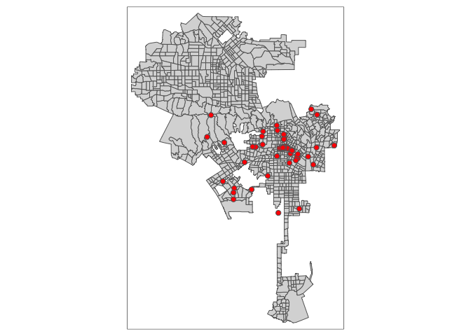

In this guide we will cover the spatial data wrangling task of converting street address point data from a nonspatial to a spatial format. This process is known as geocoding, and involves converting street addresses to geographic coordinates. We’ll be using the City of Angels - Los Angeles - as our guiding light. There are many geocoding services available and most of them require payment. We will cover geocoding using the Google Maps API, which allows free geocoding up to a certain number of addresses per day.
We’ll need to load required packages. You should have already installed these packages in prior labs, so no need to run the install.packages() function.
library(sf)
library(tidyverse)
library(tmap)Next, we’ll need to bring in shapefiles for Los Angeles City boundaries. I uploaded a zip file containing Los Angeles City shapefile boundaries on GitHub. Set your working directory to a folder you want to work out of. Download the file and unzip it using the following code.
setwd("insert your pathway here")
download.file(url = "https://raw.githubusercontent.com/crd230/data/master/georeferencing_minilab.zip", destfile = "georeferencing_minilab.zip")
unzip(zipfile = "georeferencing_minilab.zip")Bring in the boundary file
la.city.tigris <- st_read("lacity_tigris.shp")
Often you will get point data that won’t have longitude/X and latitude/Y coordinates but instead have street addresses. The process of going from address to X/Y coordinates is known as geocoding. You can geocode street addresses using the mutate_geocode() function in the ggmap package. The function will take a data frame with physical addresses and create a new data frame with longitude/X and latitude/Y coordinates for those addresses. The new data frame will retain all columns of the input data frame.
mutate_geocode() draws from Google Maps’ API to connect street addresses to x,y coordinates. You can think of it as R punching in addresses into Google Maps to find locations like you do when you are trying to find directions.
You used to be able to use mutate_geocode() without an API key, but Google changed that policy on July 2018. Now, you’ll need to register for a Google API key. Do this by going through the followng steps
When you sign up for a key, you’ll get a $200 per month credit. The Geocoding API costs $5.00 per 1,000 calls, or $0.005 per call. Over a span of 30 days, the daily usage credit for the Geocoding API is $6.67 per day. This means that you would be able to make 1,334 calls to the Geocoding API per day for free.
The R CRAN version of ggmap is old and doesn’t allow you to register a key. Download the most recent version of ggmap through GitHub using the following code
if(!requireNamespace("devtools")) install.packages("devtools")
devtools::install_github("dkahle/ggmap", ref = "tidyup")
library(ggmap)If you have an old version of ggmap on your hard drive, you may need to restart R after installing ggmap to see the new version. Use the function register_google() to register your API key.
register_google(key = 'insert your Google API key here')Now were set up to geocode stuff. As an example, let’s geocode colleges and universities in Los Angeles using the data set Colleges_and_Universities.csv, which I uploaded onto GitHub.
la.univ.df <- read_csv("https://raw.githubusercontent.com/crd230/data/master/LA_Colleges_and_Universities.csv")The command mutate_geocode() takes on two primary arguments: data and location. The argument data is the data frame containing the addresses. The argument location is a string variable containing your address information. Address information at the minimum includes street prefix (e.g. East), number, name, suffix (eg. St., Ave.), city and state. More information is better, so including a zipcode is ideal. Note that location takes in only one variable - this means that you don’t separate out city, zipcode, and state from the street address - they all (address, city, state and zipcode) have to be one concatenated (string) line separated by spaces. You can use the unite() function to concatenate fields. The addresses for the universities in la.univ.df is in one field and contains the prefix, house number, street name, city, state and zipcode. You can geocode addresses if they are missing one or more of these pieces of information - for example, you can geocode without the zipcode - but you may get some errors (cities often have multiple zip codes). You can also geocode intersections (e.g. 4th st and Main st) and landmarks (“University of California, Davis”). Check the file Geocoding_Best_Practices on Canvas Additional Readings for some tips on geocoding.
Unfortunately, Google Maps API can be a little finicky and sensitive when it comes to geocoding addresses. In other words, although there are only 50 addresses to geocode in la.univ.df, you may get several addresses receiving the following warning.
geocode failed with status OVER_QUERY_LIMIT, location = ...This means that Google Maps thinks you’ve gone over a geocoding query limit. That may be true because Google does limit geocoding queries to prevent a query overload. You can deal with this by regeocoding the addresses that receive this warning. And keep doing this until you’ve got all addresses geocoded. You can set this up using a while() loop. A while() loop repeats an action until some criteria is met. First, geocode the 50 addresses using mutate_geocode()
la.univ.df.geo1 <- mutate_geocode(la.univ.df, location=address)Look at all those pretty red words…
If you ended up with no warnings, you’re all good - all your addresses were successfully geocoded. If you end up getting the warning of a geocoding failure because of an over query limit constraint or get a result at the end that looks something like this
There were 16 warnings (use warnings() to see them)run the following while() loop
while(sum(is.na(la.univ.df.geo1$lat)) != 0){
la.univ.df1 <- la.univ.df.geo1 %>%
filter(is.na(lat) == TRUE) %>%
select(OBJECTID:address)
la.univ.df.geo2 <- mutate_geocode(la.univ.df1, location=address )
la.univ.df.geo1 <- bind_rows(filter(la.univ.df.geo1, is.na(lat) == FALSE), la.univ.df.geo2)
}Note that this process might take some time, but not more than 5-10 minutes. You can imagine that geocoding many (over 10,000) street addresses will take quite some time.
Let’s break down the above code to understand what it is doing. The code inside the parentheses of the while() command tells R to keep running the code inside the brackets while the total number of NAs (non geocoded addresses) after geocoding is not equal to 0. In other words, the while loop keeps running the code until all the addresses are geocoded. The next line of code after while()
la.univ.df1 <- la.univ.df.geo1 %>%
filter(is.na(lat) == TRUE) %>%
select(OBJECTID:address)saves the addresses with NA values from the prior geocoded data frame and keeps the original variables. So, la.univ.df1 contains addresses that were not successfully geocoded. The next line of code
la.univ.df.geo2 <- mutate_geocode(la.univ.df1, location=address)geocodes these addresses. The last line of code
la.univ.df.geo1 <- bind_rows(filter(la.univ.df.geo1, is.na(lat) == FALSE), la.univ.df.geo2)uses the bind_rows() function to append (add rows) la.univ.df.geo2 to the addresses successfully geocoded (no NA values) from the prior geocoded data frame la.univ.df.geo1.
The while() loop then goes back to its criteria in the parentheses - if this second round of geocoding still yields NA values, it will run the code again until all addresses are successfully geocoded.
Note that the final outcome la.univ.df.geo1 is not a spatial object. It needs to be converted to one if it is to be used in generating a map output. Make the data frame into an sf point object by using the variables lon and lat in the function st_as_sf(). Let’s use the CRS of la.city.tigris.
la.univ.sf <- st_as_sf(la.univ.df.geo1, coords = c("lon", "lat"),
crs = st_crs(la.city.tigris))Now, map the colleges and universities.
tm_shape(la.city.tigris) +
tm_polygons() +
tm_shape(la.univ.sf) +
tm_symbols(size = 0.25, col = "red")
Or interactively
tmap_mode("view")
tm_shape(la.univ.sf) +
tm_symbols(size = 0.25, shape=3, col = "red")The street addresses in LA_Colleges_and_Universities.csv are pretty clean and thus geocoding was relatively smooth. Geocoding, however, is a messy process when you’ve got dirty addresses. Check the file Geocoding_Best_Practices.pdf in the Week 6 folder on Canvas for some tips on geocoding.
You’ll also run into (financial) trouble if you’ve got to geocode a lot of street addresses, which is likely the case if you’re working with Big Data like Twitter tweets or crime data. In this case, you may need to set up your own street address locator using OpenStreetMap or Census TIGER street address data. Some additional paid services you may want to look into are the Census, Texas A&M’s online service and Geocodio.
Website created and maintained by Noli Brazil